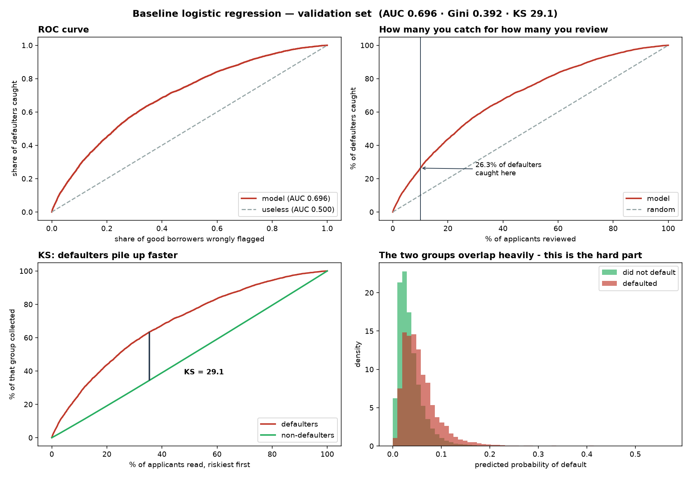

La Yaung Linn Lett
BSc (Hons) Data Science & AI, First Class — UWE Bristol. Based in London. Five end-to-end projects across credit risk modelling, commercial analytics, SQL and Power BI, and spatial statistics — looking for full-time data science and analytics roles.
Unrestricted right to work in the UK — no visa sponsorship required.
Selected projects
Five projects, chosen over a larger set because these are the ones I can defend line by line. Every figure below is reproducible from the linked repository.

PD Application Scorecard Code
A probability-of-default model on 855,502 Lending Club applications, using only what a lender holds on the day of application. It ranks applicants so a review team with 10% capacity catches 26.3% of all defaulters — 2.63× random — at Gini 0.383 on a test set opened once, after model selection closed. Logistic regression shipped ahead of a measurably better XGBoost challenger (Gini 0.427, bootstrap interval excluding zero) because a coefficient explains a decline to the applicant, which UK GDPR Article 22 pushes toward. Rather than assert a saving, the project solves for the break-even: review must prevent 4.6% of the losses it identifies to cover its own cost.
PowerCo — SME Churn & Retention Economics Code
Management believed SME churn was driven by price and proposed a blanket 20% discount. Tested on 14,606 customers joined to 193,002 monthly price records, the hypothesis did not hold — churners and stayers paid near-identical prices (€0.1419 against €0.1424 per kWh) — so the features were rebuilt around price movement rather than price level. The proposed discount would have cost €553k to protect €324k of at-risk margin, a €229k loss even assuming it retained every churner. I recommended against it and proposed a targeted six-month pilot with a control group instead, because the value estimate ranges €17k–€92k across splits and the business case rests on an untested retention assumption.
BCG X Data Science job simulation (Forage). The client is fictional and the datasets are supplied by the programme; the feature engineering, modelling, cost model and conclusions are my own.

UK Retail Sales & Customer Retention SQL + Power BI
A three-page Power BI dashboard and eleven SQL scripts on 541,909 UK online retail transactions, with every published figure regenerated from the query files themselves so a result cannot drift from the query it claims to come from. It produced a 195-customer retention call list worth £471,684 of historical spend (published revenue basis) — and then showed that the 90-day rule behind it was wrong in both directions, missing the eleventh-largest customer in the business, who buys every 7.5 days and had been silent for 38. Reviewing my own finished dashboard turned up four errors in it: one fixed, three measured, bracketed to the pound and disclosed.

Bristol Crime & House Prices — Spatial Regression Live
Geographically Weighted Regression across Bristol's 182 neighbourhoods, built on 34,543 house sales and 159,666 recorded crimes. One city-wide model explains 11% of price variation; letting the crime effect vary by neighbourhood explains 74% on the same five predictors. The spatial model was not chosen by default — a Moran's I test on the global model's residuals (0.54, p = 0.001) is the evidence that one coefficient was hiding real local variation. Per doubling of recorded crime the local effect runs from −16.3% to +1.8%, against −5.3% globally: roughly £38,000 of mispricing on a median £344,000 home in the worst-affected areas.

UK Job Market Intelligence Live
A pipeline from the Adzuna API into a four-table SQLite database, analysed in SQL and served as a dashboard, on 2,398 UK data job postings collected in two scrapes six weeks apart. Machine learning appears in 104 of 163 data-scientist skill mentions and 1 of 170 analyst mentions — two different jobs sharing a family name. Skill mentions also fell 25% between the scrapes, and the project deliberately does not report that as a market finding: every single skill moved the same direction, which points at the sample rather than at demand, and two data points cannot separate three competing explanations.
Skills
Languages & Databases
Python, SQL, PostgreSQL, SQLite
Libraries & Tools
pandas, scikit-learn, XGBoost, SHAP, GeoPandas, mgwr, Matplotlib, Streamlit, Power BI, DAX, Git/GitHub, Excel
Techniques
Credit risk modelling, imbalanced classification, decision-threshold and cost optimisation, fairness and disparate-impact auditing, spatial regression, hypothesis testing, API data collection, dashboard development, data storytelling